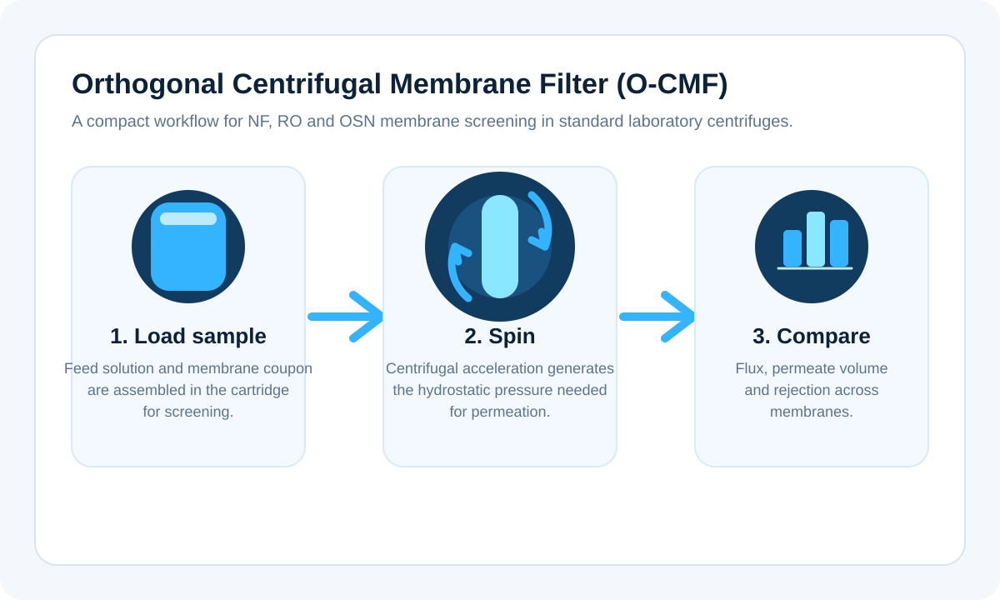

1
Load the cartridge
Feed solution and a flat membrane coupon are assembled in a compact cartridge prepared for screening.
CentrivaLab™ is built around the Orthogonal Centrifugal Membrane Filter (O-CMF) principle, enabling low-volume membrane screening in standard centrifuge infrastructure.
Organic solvent nanofiltration (OSN) remains constrained by limited experimental data. CentrivaLab is designed to accelerate screening campaigns and help generate comparable membrane performance data across solvents, pressures and operating conditions.

O-CMF uses centrifugal acceleration to create the hydrostatic pressure required to drive liquid through a membrane. This allows membrane screening experiments to be performed with compact sample volumes and without a full pump-driven filtration rig.
Feed solution and a flat membrane coupon are assembled in a compact cartridge prepared for screening.
Centrifugal acceleration generates the pressure needed for permeation through the membrane.
Flux, permeate volume and rejection can be compared across membranes, solvents and operating conditions.
The current public product reference is CentrivaLab 50/34, intended for 50 mL tube workflows and fixed-angle rotor classes around 34°.
CentrivaLab 94/25 is shown as a second public family for larger working volumes and fixed-angle rotor classes around 25°.